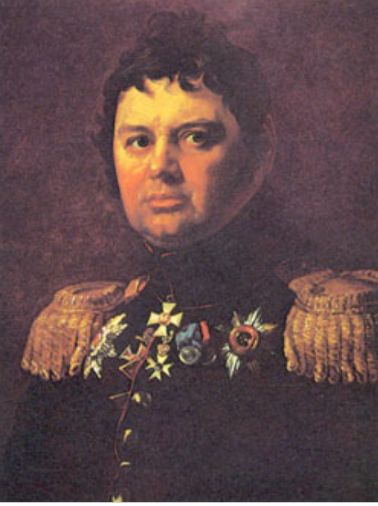
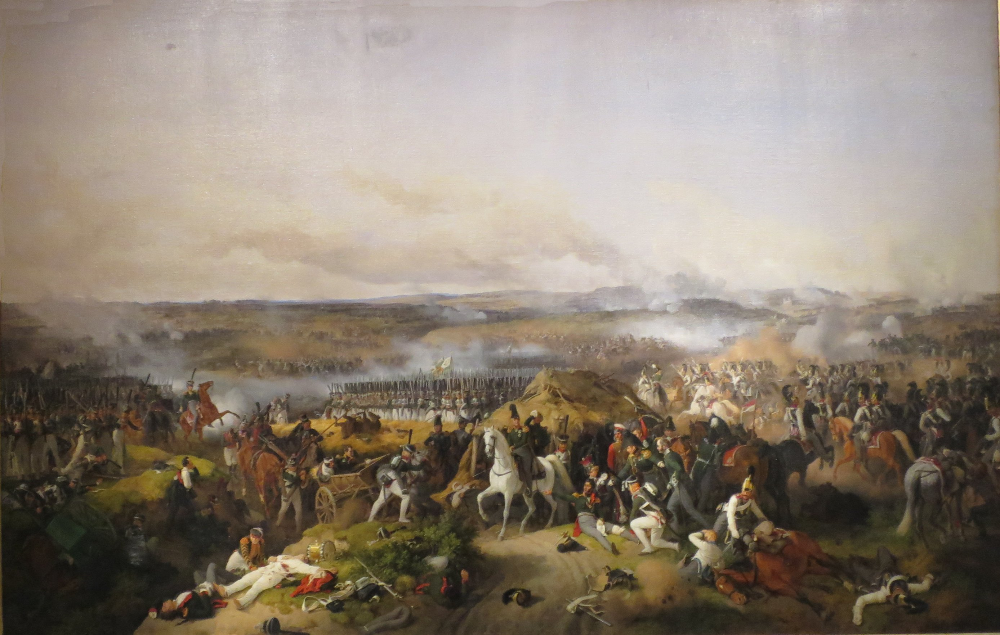
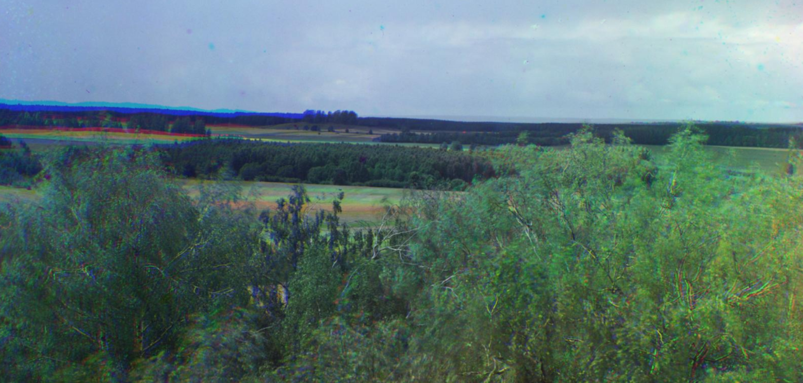
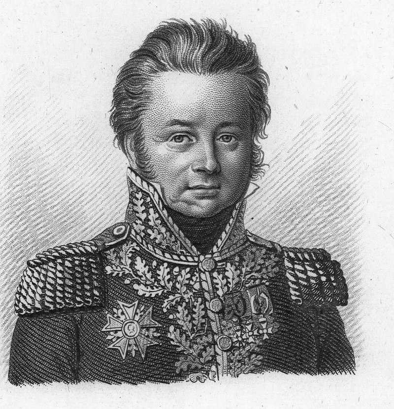
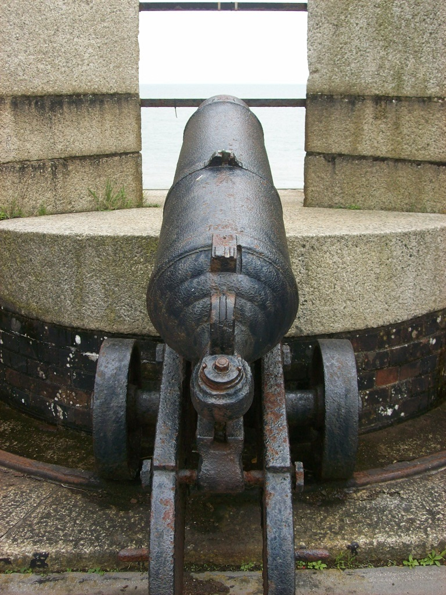
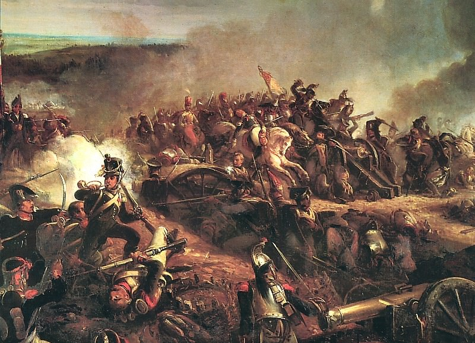

보로디노 전투 (6) - 압승
게시: 2020-08-31T06:30:59+09:00
전투가 시작된지 4시간 만인 오전 10시, 다시 3개의 철각보가 모두 프랑스군 손에 떨어진 뒤, 바그라티온은 그에 굴하지 않고 다시 철각보를 뺴앗기 위해 병력을 모아 쳐들어갔습니다. 러시아 사내들의 용기도 만만치 않아서 끝내 이들은 프랑스군을 무찌르고 다시 철각보들을 차지했습니다. 그러나 이 때, 포탄 파편이 날아와 바그라티온의 다리를 때리며 부러뜨렸습니다. 바그라티온은 처음에는 별 것 아니라며 계속 전투를 지휘했지만 곧 기력을 잃고 주저 앉았고, 부하들에 의해 전장 밖으로 실려나가게 되었습니다. 이때 전황이 어떻게 돌아가는지 살펴보기 위해 나왔던 바클레이의 부관이자 바그라티온이 싫어하던 독일인 로벤슈테른(Karl Fedorovich Lowenstern) 장군이 마침 거기에 있다가 그 모습을 보고 달려왔습니다. 그토록 싫어하던 독일인이었음에도, 이렇게 급박한 상황이 되자 바그라티온은 로벤슈테른에게 "이제 군의 운명은 바클레이 장군의 손에 달렸다고 꼭 전해주시오"라며 쿠투조프가 아닌 바클레이에게 뒷일을 부탁했습니다. 결국 바그라티온도 믿을 수 있는 사람은 러시아인 쿠투조프가 아니라 독일인 바클레이라는 것을 뒤늦게나마 인정한 셈이었습니다.

(로벤슈테른(Karl Fedorovich Lowenstern)입니다. 그는 당시 러시아군에서 미움받던 '독일인' 중 하나였는데, 바클레이처럼 조상 때부터 러시아에 정착한 독일계 귀족이 아니라 작센의 엘베 강변에서 태어나 어릴 때 부모님을 따라 러시아로 이민 온 진짜 독일인 귀족이었습니다. 그는 특이하게 러시아 해병대로 군 생활을 시작했는데 아무래도 전문 지식이 필요한 병과인 포병대에서 주로 복무했습니다. 그는 나중에 드레스덴, 라이프치히 전투에도 참전했고 결국 파리까지 쳐들어간 러시아군의 일원이었습니다.)

(철각보 앞에서 다리에 부상을 입은 채로 명령을 내리는 바그라티온의 모습입니다.) 원래 혼란의 소용돌이인 전장에서는 지엄한 사령관의 작전 명령이 일선 병사들 개개인에게까지는 잘 전달되지 않는 것이 보통입니다. 그러나 전체 군의 사기에 영향을 주는 소식은 그게 좋은 소식이든 나쁜 소식이든, 또 그게 사실이든 사실이 아니든 희한하게도 정말 빠르게 번져나가는 법입니다. 이 경우도 딱 그랬습니다. 바그라티온은 죽지 않았고 단지 부상을 입고 후송되었을 뿐이었지만 '바그라티온 장군이 죽었다' 라는 소식은 마른 들판에 불길 번지듯이 러시아 병사들 사이로 확 퍼졌습니다. 이렇게 수만 명이 뒤엉켜 무쇠와 납과 화약 연기를 뒤집어 쓰는 상황 속에서 사람 하나가 끼칠 수 있는 영향력은 사실 제한적일텐데, 그게 심리적인 부분으로 가면 또 이야기가 달랐습니다. 이미 한계까지 다달았던 러시아군의 용기가 꺾이는데 그냥 핑계가 필요했던 것일 수도 있었습니다. 아무튼 바그라티온이 쓰러졌다는 소식에 러시아군은 거짓말처럼 우르르 무너지며 철각보들을 내주고 프랑스군에게 밀려났습니다. 일단 무너지기 시작하자 러시아군은 멈출 줄을 모르고 달아나, 프랑스군은 일거에 세메오노브카(Semeonovka) 개천을 건너 세메오노브스코예(Semeonovskoie) 마을까지 점령할 수 있었습니다. 이로써 러시아 좌익은 붕괴되었고, 이제 러시아군 중앙부 뒤쪽은 프랑스군에게 훤히 노출된 상태가 되어버렸습니다. 나폴레옹이 원했던 1차적 전술 목표가 마침내 달성된 것입니다. 세메오노브스코예 마을까지 전진한 네와 뮈라는 평탄하게 뚫린 러시아군 방어선을 쳐다보며 이제 승리가 눈 앞에 있다고 생각했습니다. 그러나 바그라티온이 지휘한 러시아군의 저항은 정말 치열했습니다. 바그라티온 철각보 공격에 투입된 프랑스군 중 절반이 4시간 넘는 전투 끝에 이미 전사하거나 부상을 입은 상태였고, 살아남은 병사들도 그야말로 기진맥진한 상태였습니다. 네와 뮈라는 나폴레옹에게 전령을 보내 이제 공격로가 뚫렸으니 러시아 중앙부의 뒤편을 공격하도록 증원군을 급파해달라고 요청했습니다. 그들은 나폴레옹이 바로 이런 때 쓰기 위해서 약 2만의 강력한 근위대를 셰바르디노 언덕 주변에 포진시켜놓고 있다는 것을 잘 알고 있었기 떄문이었습니다. 여기서 잠시 시선을 돌려, 나폴레옹은 무엇을 하고 있었는지 보시지요. 러시아 좌익의 바그라티온 철각보에서 치열한 전투가 전개되는 동안 나폴레옹은 이 날 셰바르디노 언덕에 접이식 의자를 놓고 자리를 잡았습니다. 거기서 망원경을 들고 전장을 계속 관찰하고 있었는데, 쉴새 없이 파발마가 달려와 전투 현장에서 올리는 보고를 듣고 있었습니다. 증언에 따르면 이 날 나폴레옹은 이상할 정도로 그답지 못했는데, 베르티에의 참모 중 하나였던 르죈(Louis Lejeune)의 기록에 따르면 이랬습니다. "우리는 그날 마렝고와 아우스테를리츠에서 보았던 그 사내를 볼 수 없어서 무척 놀랐다. 우리는 나폴레옹이 아팠다는 것과, 그래서 그의 눈 앞에서 벌어지는 거대한 전투에서 활발한 역할을 할 수 없었다는 것을 알지 못했다. 우리는 그에 대해 불만이 가득했다."

(저 지평선에 약간 솟은 지대가 보로디노 마을의 종탑에서 내려다본 셰바르디노 언덕입니다. 뭐 대단히 높은 언덕이 아니었기 때문에 나폴레옹이 저기서 본다고 해도 전황을 생생하고 정확하게 볼 수는 없었을 것입니다.) 다부와 네, 쥐노와 뮈라 등이 바그라티온 철각보에서 죽을 힘을 다해 싸우는 동안, 나폴레옹은 다소 엉뚱하게도 러시아 방어선 중앙부의 라에프스키 보루에 대한 공격을 지시했습니다. 사실 이 공격은 다소 불필요한 것 아닌가 하는 생각이 드는데, 다부도 그 날 그의 참모에게 '작전에 일치된 주공 방향이 없다'라고 불평할 정도였습니다. 아무튼 외젠이 시작했던 그 공격은 처음에는 러시아군의 반격에 밀려났으나, 모랑(Charles Antoine Morand)의 사단이 재차 밀어붙이자 결국 성과를 내어 결국 라에프스키 보루를 향해 직접 공격이 가능하게 되었습니다. 이 공격에 참여했던 제30 보병 연대의 프랑수와(Francois)라는 이름의 대위는 이런 기록을 남겼습니다.

(모랑(Charles Antoine Morand) 장군입니다. 나폴레옹보다 2살 어린 그는 원래 법학도로서 변호사 자격증까지 취득해놓고는 혁명군으로 자원 입대하여 대위가 되었습니다. 그 이후로 독일 방면군에서 싸우다 이집트 원정군에 참여하여 드제 밑에 있었습니다. 아우스테를리츠와 아일라우 등에서도 용감히 싸워 부상을 입었습니다. 이 보로디노 전투에서도 턱에 큰 부상을 입는데, 나중에 루첸 및 바우첸 등 제6차 대불동맹전쟁 때도 용감히 잘 싸웠고 워털루 전투 현장에서도 나폴레옹 밑에서 싸웠습니다.) "아무도 우리를 막을 수 없었다. 풀밭을 뚫고 대포알들이 날아왔고, 우리는 그걸 가볍게 뛰어넘기도 했지만 종대 전체, 혹은 분대의 절반 정도가 한꺼번에 쓰러지기도 했다. 연대 진열의 선두에 선 보나미(Bonamy) 장군은 적 보루 앞, 캐니스터탄이 빗발처럼 날아오는 공터 앞에 우리 연대를 정지시켰는데, 이는 전진 중에 흐트러진 중대들을 집합시켜 일제 돌격을 하기 위해서였다. 이윽고 우리는 전진을 시작했는데 우리 앞에 러시아 보병들이 나타났지만 우리는 30보 앞까지 전진한 뒤 일제 사격을 가해 그들을 제압하고 그들의 시체 위를 걸어 넘었다. 그 다음에 우리는 보루의 벽에 몸을 던지고 포안(embrasure)을 향해 기어오르기 시작했다. 나도 기어올랐는데, 머리 위의 대포가 불을 뿜자마자 그 포안 속으로 뛰어올라 들어갔다. 러시아 포병들은 장전봉과 쇠지렛대를 휘두르며 우리를 밀어내려 했다. 우리는 백병전을 벌였는데, 그들은 아주 용맹한 적수들이었다."

(제가 '포안'이라고 번역한 embrasure라는 것은 총이나 대포를 쏘기 위해 성벽 등에 뚫어놓은 구멍을 말합니다.)

(나폴레옹의 궁정화가 르죈(Louis-François Lejeune)이 그린 라에프스키 보루의 전투인데, 여기서는 보루가 거의 참호 정도로 그려져 있네요.)
이 보루가 라에프스키 보루로 불렸던 것은 이 보루를 지키던 지휘관이 바로 라에프스키 장군이기 때문이었는데, 라에프스키는 이미 며칠 전 사소한 사고로 다리에 부상을 입은 상태였습니다. 프랑스군이 보루 안에 뛰어들자 라에프스키는 다친 다리로 어렵사리 피신할 수 있었으나 그 보루를 지키던 러시아군 대부분은 그 자리에서 결국 다 살해되었습니다. 이때가 오전 10시가 아직 안 된 때였습니다. 이로부터 몇십 분 뒤에 바그라티온이 부상당하면서 바그라티온 철각보들이 무너집니다. 즉, 이제 쿠투조프의 방어선은 중앙과 좌익이 다 무너지기 일보 직전이었습니다. 보로디노 전투는 이렇게 오전 중에 프랑스군의 압승으로 끝나는 듯 했습니다.
Source : 1812 Napoleon's Fatal March on Moscow by Adam Zamoyski
en.wikipedia.org/wiki/Estimates_of_opposing_forces_in_the_Battle_of_Borodino
en.wikipedia.org/wiki/Bagration_fl%C3%A8ches
www.napoleon-series.org/research/russians/c_lowenstern2.html